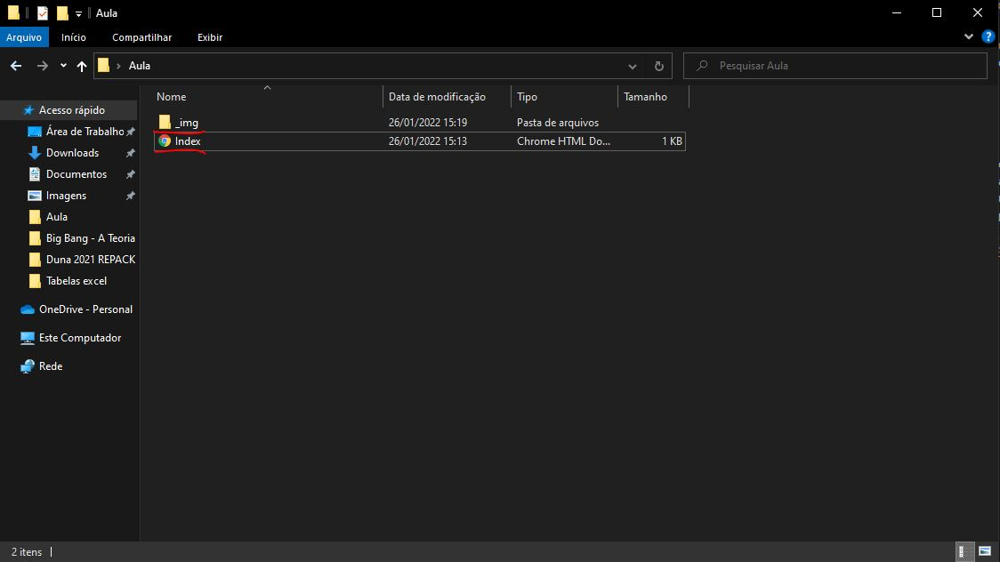
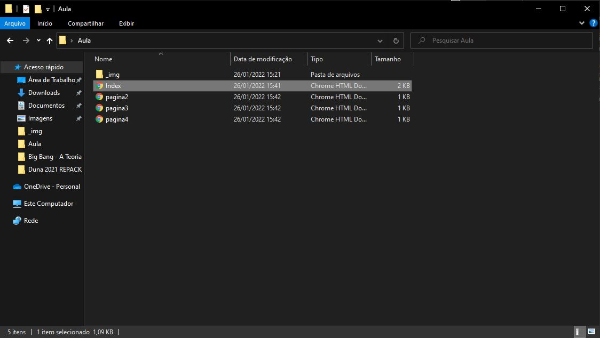

Utilizar imagens e links em um site
a principio é importante para essa aula lembrarmos de como organizamos
os sites tendo uma pasta como raiz e nossa primeira pagina como index.
Essa organização vai ser importante para que nos façamos as referencias dos nossos
arquivos de imagem e paginas HTML. Para fins de organização iremos criar uma pasta para
guardar nossos arquivos de fotos.

A tag <a> nos permite criar um link com outra pagina HTML utilizando o argumento
href"" para referenciar os arquivos em nossa maquina ou na web.
Para esse exemplo irei criar algumas paginas web na minha pasta mostrada anteriormente

E dentro do meu codigo html eu vou envolver algum conteudo com a tag <a>
podendo ser um texto ou uma imagem e então indicar a pagina para onde o usuario vai
ser redirecionado com href="link da pagina", no meu caso, como todas as paginas estão
na mesma pasta, basta colocar o nome do arquivo por exemplo:
<a href="pagina2.html">proxima paigna<a>
que vai ficar assim:
proxima pagina